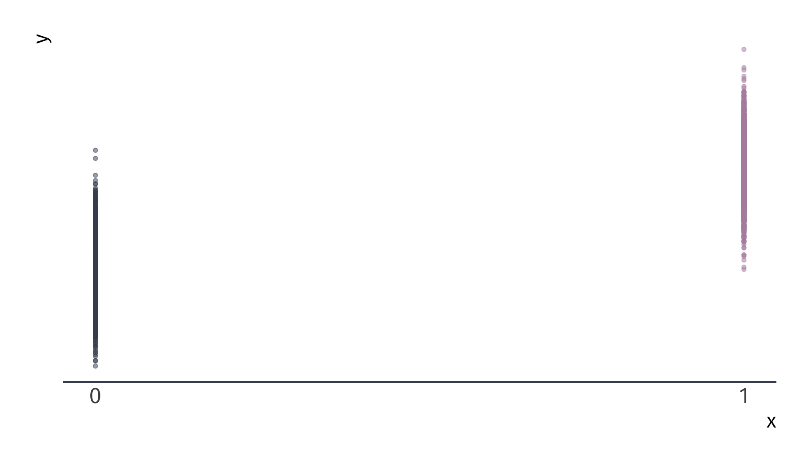
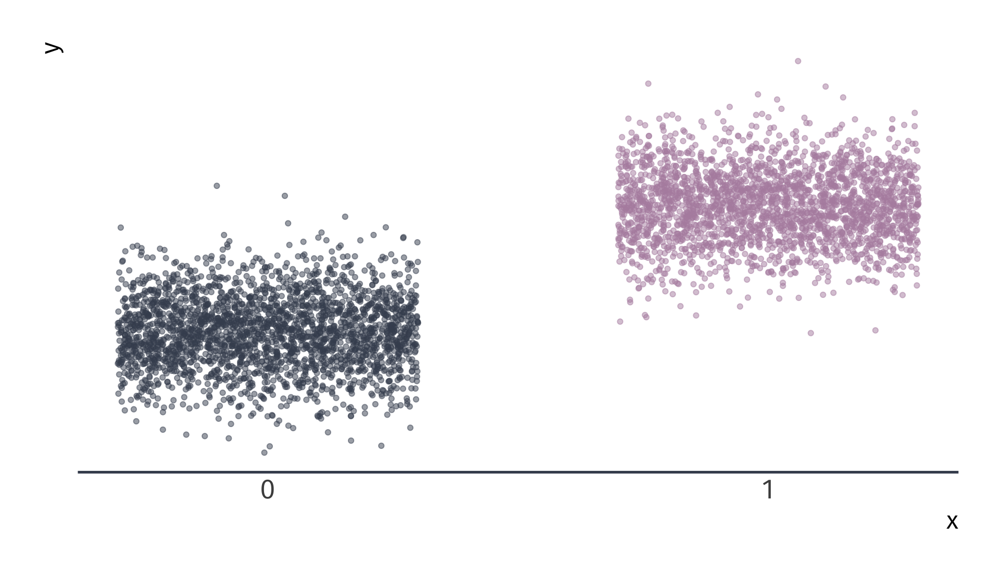
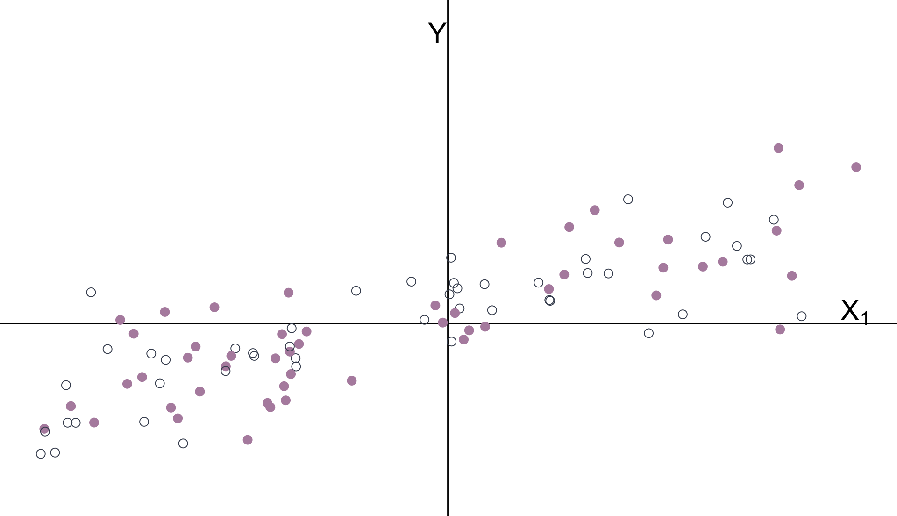
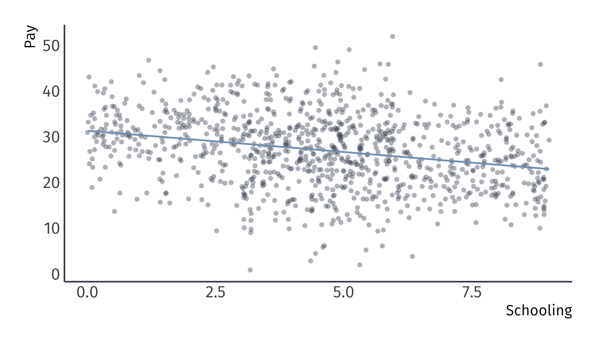

Categorical variables and interactions
EC 320, Set 09
Spring 2023
Prologue
Housekeeping (06/05)
Apologies for the late penalty on PS04. It has been fixed.
PS05:
- Due Friday, June 9th at 11:59p
Reading: (up to this point)
ItE: R, 1, 2, 3, 4, 5
MM: 1, 2
Final exam: 06/13 14:45
Categorical Variables
Goal Make quantitative statements about qualitative information.
- e.g., race, gender, being employed, living in Oregon, etc.
Approach. Construct binary variables.
- a.k.a. dummy variables or indicator variables.
- Value equals 1 if observation is in the category or 0 if otherwise.
Regression implications.
Change the interpretation of the intercept.
Change the interpretations of the slope parameters.
Continuous Variables
Consider the relationship
\[ \text{Pay}_i = \beta_0 + \beta_1 \text{School}_i + u_i \]
where
- \(\text{Pay}_i\) is a continuous variable measuring an individual’s pay
- \(\text{School}_i\) is a continuous variable that measures years of education
Interpretation
- \(\beta_0\): \(y\)-intercept, i.e., \(\text{Pay}\) when \(\text{School} = 0\)
- \(\beta_1\): expected increase in \(\text{Pay}\) for a one-unit increase in \(\text{School}\)
Consider the relationship
\[ \text{Pay}_i = \beta_0 + \beta_1 \text{School}_i + u_i \]
Derive the slope’s interpretation.
\(\mathop{\mathbb{E}}\left[ \text{Pay} | \text{School} = \ell + 1 \right] - \mathop{\mathbb{E}}\left[ \text{Pay} | \text{School} = \ell \right]\)
\(\quad = \mathop{\mathbb{E}}\left[ \beta_0 + \beta_1 (\ell + 1) + u \right] - \mathop{\mathbb{E}}\left[ \beta_0 + \beta_1 \ell + u \right]\)
\(\quad = \left[ \beta_0 + \beta_1 (\ell + 1) \right] - \left[ \beta_0 + \beta_1 \ell \right]\)
\(\quad = \beta_0 - \beta_0 + \beta_1 \ell - \beta_1 \ell + \beta_1\) \(\: = \beta_1\).
Expected increase in pay for an additional year of schooling
Continuous Variables
Consider the relationship
\[ \text{Pay}_i = \beta_0 + \beta_1 \text{School}_i + u_i \]
Alternative derivation:
Differentiate the model with respect to schooling:
\[ \dfrac{\partial \text{Pay}}{\partial \text{School}} = \beta_1 \]
Expected increase in pay for an additional year of schooling
If we have multiple explanatory variables, e.g.,
\[ \text{Pay}_i = \beta_0 + \beta_1 \text{School}_i + \beta_2 \text{Ability}_i + u_i \]
then the interpretation changes slightly.
\(\mathop{\mathbb{E}}\left[ \text{Pay} | \text{School} = \ell + 1 \land \text{Ability} = \alpha \right] - \mathop{\mathbb{E}}\left[ \text{Pay} | \text{School} = \ell \land \text{Ability} = \alpha \right]\)
\(\quad = \mathop{\mathbb{E}}\left[ \beta_0 + \beta_1 (\ell + 1) + \beta_2 \alpha + u \right] - \mathop{\mathbb{E}}\left[ \beta_0 + \beta_1 \ell + \beta_2 \alpha + u \right]\)
\(\quad = \left[ \beta_0 + \beta_1 (\ell + 1) + \beta_2 \alpha \right] - \left[ \beta_0 + \beta_1 \ell + \beta_2 \alpha \right]\)
\(\quad = \beta_0 - \beta_0 + \beta_1 \ell - \beta_1 \ell + \beta_1 + \beta_2 \alpha - \beta_2 \alpha\) \(\: = \beta_1\)
The slope gives the expected increase in pay for an additional year of schooling, holding ability constant.
Continuous Variables
If we have multiple explanatory variables, e.g.,
\[ \text{Pay}_i = \beta_0 + \beta_1 \text{School}_i + \beta_2 \text{Ability}_i + u_i \]
then the interpretation changes slightly.
Alternative derivation
Differentiate the model with respect to schooling:
\[ \dfrac{\partial\text{Pay}}{\partial\text{School}} = \beta_1 \]
The slope gives the expected increase in pay for an additional year of schooling, holding ability constant.
Categorical Variables
Consider the relationship
\[ \text{Pay}_i = \beta_0 + \beta_1 \text{Female}_i + u_i \]
where \(\text{Pay}_i\) is a continuous variable measuring an individual’s pay and \(\text{Female}_i\) is a binary variable equal to \(1\) when \(i\) is female.
Interpretation of \(\beta_0\)
\(\beta_0\) is the expected \(\text{Pay}\) for males (i.e., when \(\text{Female} = 0\)):
\[ \mathop{\mathbb{E}}\left[ \text{Pay} | \text{Male} \right] = \mathop{\mathbb{E}}\left[ \beta_0 + \beta_1\times 0 + u_i \right] = \mathop{\mathbb{E}}\left[ \beta_0 + 0 + u_i \right] = \beta_0 \]
Categorical Variables
Consider the relationship
\[ \text{Pay}_i = \beta_0 + \beta_1 \text{Female}_i + u_i \]
where \(\text{Pay}_i\) is a continuous variable measuring an individual’s pay and \(\text{Female}_i\) is a binary variable equal to \(1\) when \(i\) is female.
Interpretation of \(\beta_1\)
\(\beta_1\) is the expected difference in \(\text{Pay}\) between females and males:
\(\mathop{\mathbb{E}}\left[ \text{Pay} | \text{Female} \right] - \mathop{\mathbb{E}}\left[ \text{Pay} | \text{Male} \right]\) . . . \(\quad = \mathop{\mathbb{E}}\left[ \beta_0 + \beta_1\times 1 + u_i \right] - \mathop{\mathbb{E}}\left[ \beta_0 + \beta_1\times 0 + u_i \right]\) . . . \(\quad = \mathop{\mathbb{E}}\left[ \beta_0 + \beta_1 + u_i \right] - \mathop{\mathbb{E}}\left[ \beta_0 + 0 + u_i \right]\) . . . \(\quad = \beta_0 + \beta_1 - \beta_0\) . . . \(\quad = \beta_1\)
Categorical Variables
Consider the relationship
\[ \text{Pay}_i = \beta_0 + \beta_1 \text{Female}_i + u_i \]
where \(\text{Pay}_i\) is a continuous variable measuring an individual’s pay and \(\text{Female}_i\) is a binary variable equal to \(1\) when \(i\) is female.
Interpretation
\(\beta_0 + \beta_1\): is the expected \(\text{Pay}\) for females:
\(\mathop{\mathbb{E}}\left[ \text{Pay} | \text{Female} \right]\)
\(\quad = \mathop{\mathbb{E}}\left[ \beta_0 + \beta_1\times 1 + u_i \right]\)
\(\quad = \mathop{\mathbb{E}}\left[ \beta_0 + \beta_1 + u_i \right]\)
\(\quad = \beta_0 + \beta_1\)
Categorical Variables
Consider the relationship
\[ \text{Pay}_i = \beta_0 + \beta_1 \text{Female}_i + u_i \]
Interpretation
- \(\beta_0\): expected \(\text{Pay}\) for males (i.e., when \(\text{Female} = 0\))
- \(\beta_1\): expected difference in \(\text{Pay}\) between females and males
- \(\beta_0 + \beta_1\): expected \(\text{Pay}\) for females
- Males are the reference group
Categorical Variables
Consider the relationship
\[ \text{Pay}_i = \beta_0 + \beta_1 \text{Female}_i + u_i \]
Note. If there are no other variables to condition on, then \(\hat{\beta}_1\) equals the difference in group means, e.g., \(\bar{X}_\text{Female} - \bar{X}_\text{Male}\).
Note2. The holding all other variables constant interpretation also applies for categorical variables in multiple regression settings.
Categorical Variables
\(Y_i = \beta_0 + \beta_1 X_i + u_i\) for binary variable \(X_i = \{\color{#434C5E}{0}, \, {\color{#B48EAD}{1}}\}\)
Categorical Variables
\(Y_i = \beta_0 + \beta_1 X_i + u_i\) for binary variable \(X_i = \{\color{#434C5E}{0}, \, {\color{#B48EAD}{1}}\}\)
Categorical Variables
\(Y_i = \beta_0 + \beta_1 X_i + u_i\) for binary variable \(X_i = \{\color{#434C5E}{0}, \, {\color{#B48EAD}{1}}\}\)
Multiple Regression
\(Y_i = \beta_0 + \beta_1 X_{1i} + \beta_2 X_{2i} + u_i \quad\) \(X_1\) is continuous \(\quad X_2\) is categorical
Multiple Regression
The intercept and categorical variable \(X_2\) control for the groups’ means.
Multiple Regression
With groups’ means removed:
Multiple Regression
\(\hat{\beta}_1\) estimates the relationship between \(Y\) and \(X_1\) after controlling for \(X_2\).
Multiple Regression
Another way to think about it:
Omitted variables
Omitted Variables
Omitted Variables
Omitted Variables
| Explanatory variable | 1 | 2 |
|---|---|---|
| Intercept | -84.84 | -6.34 |
| (18.57) | (15.00) | |
| log(Spend) | -1.52 | 11.34 |
| (2.18) | (1.77) | |
| Lunch | -0.47 | |
| (0.01) |
Data from 1823 elementary schools in Michigan
- Math Score: average fourth grade state math test scores.
- log(Spend): the natural logarithm of spending per pupil.
- Lunch: percentage of student eligible for free or reduced-price lunch.
Omitted Variables
| Explanatory variable | 1 | 2 |
|---|---|---|
| Intercept | -84.84 | -6.34 |
| (18.57) | (15.00) | |
| log(Spend) | -1.52 | 11.34 |
| (2.18) | (1.77) | |
| Lunch | -0.47 | |
| (0.01) |
Data from 1823 elementary schools in Michigan
- Math Score: average fourth grade state math test scores.
- log(Spend): the natural logarithm of spending per pupil.
- Lunch: percentage of student eligible for free or reduced-price lunch.
Omitted-Variable Bias
Model 01: \(Y_i = \beta_0 + \beta_1 X_{1i} + u_i\).
Model 02 \(Y_i = \beta_0 + \beta_1 X_{1i} + \beta_2 X_{2i} + v_i\)
Estimating Model 01 (without \(X_2\)) yields omitted-variable bias:
\[ \color{#B48EAD}{\text{Bias} = \beta_2 \frac{\mathop{\text{Cov}}(X_{1i}, X_{2i})}{\mathop{\text{Var}}(X_{1i})}} \]
The sign of the bias depends on
The correlation between \(X_2\) and \(Y\), i.e., \(\beta_2\).
The correlation between \(X_1\) and \(X_2\), i.e., \(\mathop{\text{Cov}}(X_{1i}, X_{2i})\).
Omitted variable bias
OVB arises when we omit a variable, \(X_k\) that
Affects the outcome variable \(Y\), \(\beta_k \neq 0\)
Correlates with an explanatory variable \(X_j\), \(Cov(X_j, X_k) \neq 0\),
Biases OLS estimator of \(\beta_j\).
If we omit \(X_k\), then the formula for the bias it creates in \(\hat{\beta}_j\) is…
\[ \color{#B48EAD}{\text{Bias} = \beta_2 \frac{\mathop{\text{Cov}}(X_{1i}, X_{2i})}{\mathop{\text{Var}}(X_{1i})}} \]
Omitted variable bias
Ex. Imagine a population model for the amount individual \(i\) gets paid
\[ \text{Pay}_i = \beta_0 + \beta_1 \text{School}_i + \beta_2 \text{Male}_i + u_i \]
where \(\text{School}_i\) gives \(i\)’s years of schooling and \(\text{Male}_i\) denotes an indicator variable for whether individual \(i\) is male.
Interpretation
- \(\beta_1\): returns to an additional year of schooling (ceteris paribus)
- \(\beta_2\): premium for being male (ceteris paribus)
If \(\beta_2 > 0\), then there is discrimination against women.
Omitted variable bias
Ex. From the population model
\[ \text{Pay}_i = \beta_0 + \beta_1 \text{School}_i + \beta_2 \text{Male}_i + u_i \]
An analyst focuses on the relationship between pay and schooling, i.e.,
\[ \text{Pay}_i = \beta_0 + \beta_1 \text{School}_i + \left(\beta_2 \text{Male}_i + u_i\right) \] \[ \text{Pay}_i = \beta_0 + \beta_1 \text{School}_i + \varepsilon_i \]
where \(\varepsilon_i = \beta_2 \text{Male}_i + u_i\).
Omitted variable bias
We assumed exogeniety to show that OLS is unbiased.
Even if \(\mathop{\mathbb{E}}\left[ u | X \right] = 0\), it is not necessarily true that \(\mathop{\mathbb{E}}\left[ \varepsilon | X \right] = 0\)
- If \(\beta_2 \neq 0\), then it is false
Specifically, if
\[ \mathop{\mathbb{E}}\left[ \varepsilon | \text{Male} = 1 \right] = \beta_2 + \mathop{\mathbb{E}}\left[ u | \text{Male} = 1 \right] \neq 0 \]
Then, OLS is biased
Omitted variable bias
Let’s try to see this result graphically.
The true population model:
\[ \text{Pay}_i = 20 + 0.5 \times \text{School}_i + 10 \times \text{Male}_i + u_i \]
The regression model that suffers from omitted-variable bias:
\[ \text{Pay}_i = \hat{\beta}_0 + \hat{\beta}_1 \times \text{School}_i + e_i \]
Suppose that women, on average, receive more schooling than men.
Omitted variable bias
True model: \(\text{Pay}_i = 20 + 0.5 \times \text{School}_i + 10 \times \text{Male}_i + u_i\)
Omitted variable bias
Biased regression: \(\widehat{\text{Pay}}_i = 31.3 + -0.9 \times \text{School}_i\)
Omitted variable bias
Recalling the omitted variable: Gender (female and male)
Omitted variable bias
Recalling the omitted variable: Gender (female and male)

Omitted variable bias
Unbiased regression: \(\widehat{\text{Pay}}_i = 20.9 + 0.4 \times \text{School}_i + 9.1 \times \text{Male}_i\)
Examples.
Ex. Card (1995)
Education is not randomly assigned across the population, it is a choice. “Depending on how these choices are made, measured earnings differences between workers with different levels of schooling may over-state or under-state the true return to education.”
Card (1995) uses geographic information to causally identify the impact of education earnings by comparing young men who grew up near higher education institutions:
Find effect suggesting that the greatest earnings increases are among poor men, suggesting that the presence of a local college lowers the costs/raises the perceived benefits of education.
Ex. Card (1995) Abstract
Although schooling and earnings are highly correlated, social scientists have argued for decades over the causal effect of education. This paper explores the use of college proximity as an exogenous determinant of schooling. An examination… reveals that men who grew up in local labor markets with a nearby college have significantly higher education and significantly higher earnings than other men. The education and earnings gains are concentrated among men with poorly- educated parents – men who would otherwise stop schooling at relatively low levels.
Ex. Card (1995) Data
| Variable | Description |
|---|---|
| id | Person identifier |
| nearc4 | =1 if near 4 yr college, 1966 |
| educ | Years of schooling, 1976 |
| age | Age in years |
| fatheduc | Father’s schooling |
| motheduc | Mother’s schooling |
| weight | NLS sampling weight, 1976 |
| black | =1 if black |
| south | =1 if in south, 1976 |
| wage | Hourly wage in cents, 1976 |
| IQ | IQ score |
| libcrd14 | =1 if lib. card in home at 14 |
Ex. Card (1995)
Regress wages on an indicator for proximity to a four year institution
# A tibble: 2 × 5
term estimate std.error statistic p.value
<chr> <dbl> <dbl> <dbl> <dbl>
1 (Intercept) 516. 8.39 61.5 0
2 nearc4 89.2 10.2 8.77 2.85e-18Q1: What is the reference category?
Q2: Interpret the coefficients.
Q3: Suppose we had an indicator that was equal to one for individual who lived far from 4 year institutions, farc4, and ran lm(wage ~ farc4, data = wage_data) instead. What is the coefficient estimate on farc4? What is the intercept estimate?
Ex. Card (1995)
# A tibble: 3 × 5
term estimate std.error statistic p.value
<chr> <dbl> <dbl> <dbl> <dbl>
1 (Intercept) 562. 8.65 65.0 0
2 nearc4 78.1 9.84 7.94 2.73e-15
3 black -162. 10.8 -15.0 7.16e-49Q1: What is the reference category?
Q2: Interpret the coefficients.
Q3: Suppose you ran lm(wage ~ nearc4 + nonblack, data = wage_data) instead. What is the coefficient estimate on nonblack? What is the coefficient estimate on nearc4? What is the intercept estimate?
Ex. Card (1995)
Answer to Q3:
Ex. Card (1995)
# A tibble: 5 × 5
term estimate std.error statistic p.value
<chr> <dbl> <dbl> <dbl> <dbl>
1 (Intercept) 312. 25.1 12.5 8.47e-35
2 educ 21.5 1.73 12.4 1.02e-34
3 nearc4 47.3 9.75 4.85 1.31e- 6
4 south -74.1 9.81 -7.56 5.52e-14
5 black -98.5 11.3 -8.68 6.27e-18Q1: What is the reference category?
Q2: Interpret the coefficients.
We considered a model where schooling has the same effect for everyone (F and M)
We will consider models that allow effects to differ by another variable (e.g., by gender: (F and M)):
Interactive relationships
Motivation
Regression coefficients describe average effects. But for whom does on average mean?
Averages can mask heterogeneous effects that differ by group or by the level of another variable.
We can use interaction terms to model heterogeneous effects, accommodating complexity and nuance by going beyond “the effect of \(X\) on \(Y\) is \(\beta_1\).”
Interaction Terms
Starting point: \(Y_i = \beta_0 + \beta_1 X_{1i} + \beta_2 X_{2i} + u_i\)
- \(X_{1i}\) is the variable of interest
- \(X_{2i}\) is a control variable
A richer model: Interactions test whether \(X_{2i}\) moderates the effect of \(X_{1i}\)
\[ Y_i = \beta_0 + \beta_1 X_{1i} + \beta_2 X_{2i} + \beta_3 X_{1i} \cdot X_{2i} + u_i \]
Interpretation: The partial derivative of \(Y_i\) with respect to \(X_{1i}\) is the marginal effect of \(X_1\) on \(Y_i\):
\[ \color{#81A1C1}{\dfrac{\partial Y}{\partial X_1} = \beta_1 + \beta_3 X_{2i}} \]
The effect of \(X_1\) depends on the level of \(X_2\) 🤯
Ex. Differential returns to education
Ex. Differential returns to education
Research question: Do the returns to education vary by race?
Consider the interactive regression model:
\[\begin{align*} \text{Wage}_i = \beta_0 &+ \beta_1 \text{Education}_i + \beta_2 \text{Black}_i \\ &+ \beta_3 \text{Education}_i \times \text{Black}_i + u_i \end{align*}\]
What is the marginal effect of an additional year of education?
\[ \dfrac{\partial \text{Wage}}{\partial \text{Education}} = \beta_1 + \beta_3 \text{Black}_i \]
Ex. Differential returns to education
What is the return to education for black workers?
# A tibble: 4 × 5
term estimate std.error statistic p.value
<chr> <dbl> <dbl> <dbl> <dbl>
1 (Intercept) 196. 82.2 2.38 1.75e- 2
2 educ 58.4 5.96 9.80 1.19e-21
3 black 321. 263. 1.22 2.23e- 1
4 educ:black -40.7 20.7 -1.96 4.99e- 2\[ \widehat{\left(\dfrac{\partial \text{Wage}}{\partial \text{Education}} \right)}\Bigg|_{\small \text{Black}=1} = \hat{\beta}_1 + \hat{\beta}_3 = 17.65 \]
Ex. Differential returns to education
What is the return to education for non-black workers?
# A tibble: 4 × 5
term estimate std.error statistic p.value
<chr> <dbl> <dbl> <dbl> <dbl>
1 (Intercept) 196. 82.2 2.38 1.75e- 2
2 educ 58.4 5.96 9.80 1.19e-21
3 black 321. 263. 1.22 2.23e- 1
4 educ:black -40.7 20.7 -1.96 4.99e- 2\[ \widehat{\left(\dfrac{\partial \text{Wage}}{\partial \text{Education}} \right)}\Bigg|_{\small \text{Black}=0} = \hat{\beta}_1 = 58.38 \]
Ex. Differential returns to education
Q: Does the return to education differ by race?
Conduct a two-sided \(t\)-test of the null hypothesis that the interaction coefficient equals 0 at the 5% level.
p-value = 0.0499 < 0.05 \(\implies\) reject null hypothesis.
A: The return to education is significantly lower for black workers.
Ex. Differential returns to education
We can also test hypotheses about specific marginal effects.
- e.g., H0: \(\left(\dfrac{\partial \text{Wage}}{\partial \text{Education}} \right)\Bigg|_{\small \text{Black}=1} = 0\).
- Conduct a \(t\) test or construct confidence intervals.
Problem 1: lm() output does not include \(\hat{\text{SE}}\) for the marginal effects.
Problem 2: The formula for marginal effect standard errors includes covariances between coefficient estimates. The math is messy.1
Solution: Construct confidence intervals using the margins package.
Ex. Differential returns to education
The margins function provides standard errors and 95% confidence intervals for each marginal effect.
pacman::p_load(margins)
reg = lm(wage ~ educ + black + educ:black, data = wage2)
margins(reg, at = list(black = 0:1)) %>% summary() %>% filter(factor == "educ") factor black AME SE z p lower upper
educ 0.0000 58.3773 5.9527 9.8068 0.0000 46.7101 70.0444
educ 1.0000 17.6544 19.8954 0.8874 0.3749 -21.3399 56.6488Ex. Differential returns to education
We can use the geom_pointrange() option in ggplot2 to plot the marginal effects with 95% confidence intervals.
EC320, Set 09 | Categorical variables and interactions